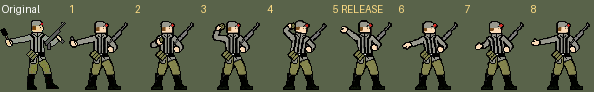

Bombaš · bacanje bombe
Osam kadrova prema postojećem liku: spreman položaj, privlačenje bombe, zamah, otpuštanje, izmah i povratak prazne ruke. Ovo je pregled arta i tajminga; bacanje još nije povezano sa igrom.
Otpuštanje: početak petog kadra, 0,40 s. Od tog trenutka šaka je prazna; poslednji kadar ostaje zadržan. „Reset” započinje novu probu sa novom bombom. Oznaka tačke je pomoćna mera, nije deo spritea.
Ćelija 66×72 px; sidrište (33,36), linija oslonca y=70. Strelica označava smer u ravni slike. Stvarni smer i brzinu bombe određuje buduće telo aktera. Ogledanje koristi isto sidrište i za lik i za šaku.
Svi kadrovi u veličini igre

Animirani GIF · Kadrovi i trenutak otpuštanja · Izvori i tačni promptovi